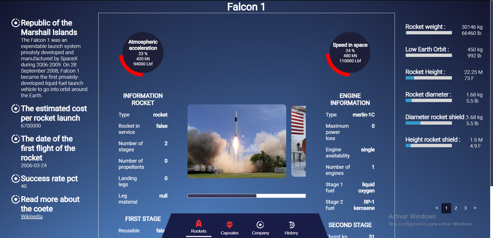
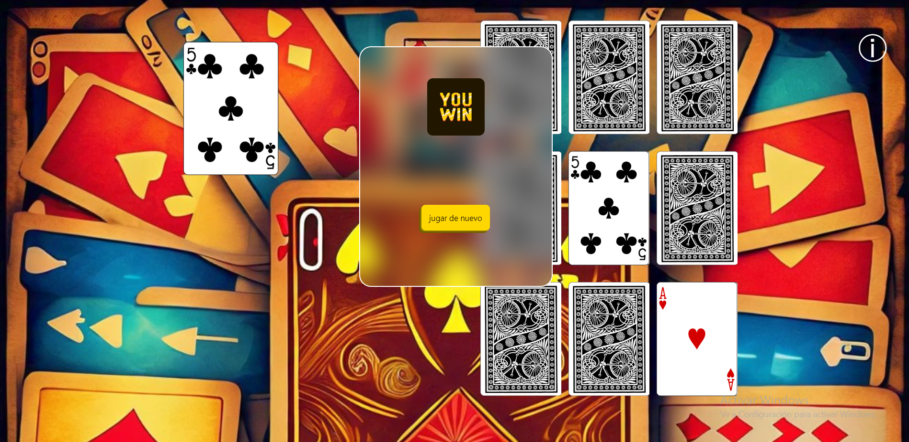

Utilizando la pokéApi para recrear la Pokédex podemos buscar entre una gran variedad de pokemons por nombre o numero.
SpaceX

una pagina que contiene informacion de cohetes, capsulas, un poco de historia, datos de la compañia de SpaceX y Elon Musk.
Adivina

Pequeño juego de cartas cuyo objetivo es encontrar la carta que se muestra en un maximo de 2 intentos
SOBRE MI
¡Hola! soy Luis Miguel Caicedo Bermon un desarrollador de software apasionado
por ofrecer al usuario experiencias unicas y comodas. mi estilo combina mi creatividad con la tecnologia para
brindar una mejor experiencia
Manejando herramientas como HTML, CSS y JS puedo darle vida y funcionalidad
a mis creaciones tomando un poco de inspiración de mis series favoritas
Cuando no estoy programando estoy viendo alguna serie o estoy explorando nuevas tecnologias
o tambien aprendiendo algo nuevo en JAVA,